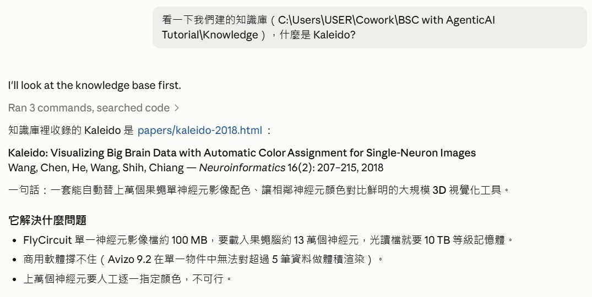
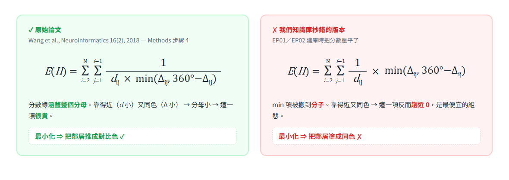
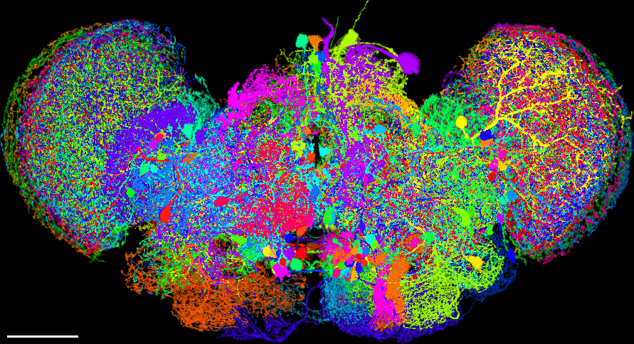
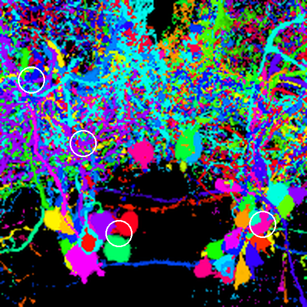
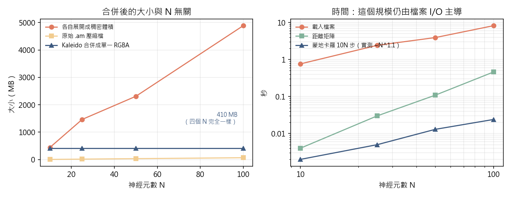
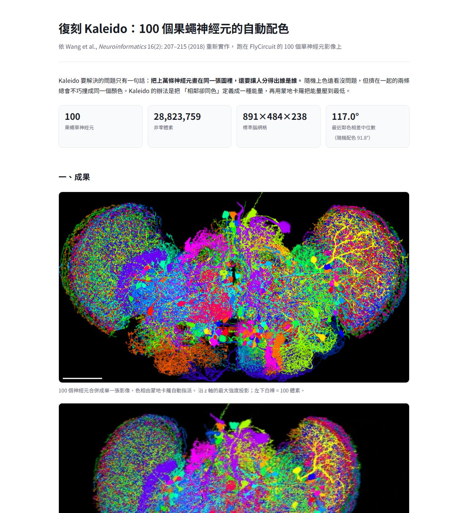
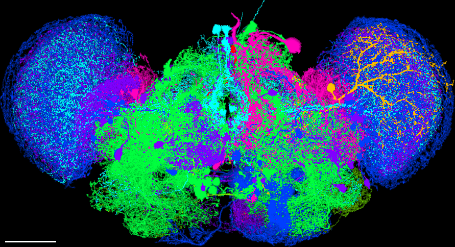

📺 影片版
不想讀字？可以先看影片導覽，再回來細讀；兩者內容一致。
這一集做出來的兩個成品
📦 ① 一個可以自己跑的 GitHub repo：ctshih/Kaleido-ClaudeKaleido 演算法的完整實作（六支 Python）＋ 100 個 FlyCircuit 神經元影像（v1.0 Release，61 MB，首次執行自動下載）。
git clone 之後三行指令就能在自己機器上重現全部結果 →
📊
② 一份結果報告100 個神經元的自動配色、與隨機配色的逐對比較、能量收斂曲線、規模量測。頁面裡沒有一個數字是手寫的，全部從實驗產生的 JSON 讀出來 →
對話框顏色說明
後面 Part 1 會完整重現使用者說過的每一句話。AI 的動作則用灰底「AI 做了什麼」摘要。五種顏色標示「這句話在做什麼」：
EP04 的顏色分布是整個系列裡最極端的：總共只有三句話，一句 🔵、一句 🔵、一句 🟢。整份文件其餘的內容全部是 AI 自己的判斷與自我糾錯。這正是這一集要示範的東西：當你不再逐句指揮，品質從哪裡來？
名詞速查表
看到不懂的詞先回來查。分成三張表：論文與演算法、這批資料、Agentic AI 能力。
A. 論文與演算法
| 名詞 | 白話解釋 |
|---|---|
| Kaleido | 2018 年發表的果蠅腦視覺化演算法。核心是「自動配色」：讓擠在一起的神經元自動拿到對比鮮明的顏色，人眼才分得出誰是誰。 |
| 色相（hue） | 顏色的「種類」，用 0–360 度的環表示：0° 紅、120° 綠、240° 藍。Kaleido 只調色相，飽和度固定、亮度交給訊號強度。↓ 有一節專門講這個 |
| HSV 色彩模型 | 把顏色拆成色相（Hue）、飽和度（Saturation）、明度（Value）三個維度的表示法。↓ 詳見下一節 |
| 能量函數 | 把「這個配色有多糟」寫成一個數字。糟的組態分數高，演算法的工作就是把這個數字壓低。名字借自物理，跟熱量無關。 |
| 蒙地卡羅（Monte Carlo） | 用亂數試誤找最佳解的方法。隨機換兩個顏色，變好就接受，變糟也偶爾接受（免得卡在半山腰），重複幾十萬次。 |
| 退火（annealing） | 蒙地卡羅的調度策略：一開始「溫度」高、容易接受變糟的提案以便到處探索；後期降溫、只往好的方向走。名字來自金屬冶煉。 |
| 最近鄰色相差 | 本集用來評分的指標：每條神經元跟它空間上最近的鄰居之間差幾度顏色。越大越好認，理想是 180°（對比色）。 |
B. 這批資料
| 名詞 | 白話解釋 |
|---|---|
| FlyCircuit | 台灣清華大學建立的果蠅腦資料庫，收錄約 16,000 個單神經元的三維影像。這一集用其中 100 個。 |
| 標準腦（standard brain） | 一顆當作「共同座標系」的參考腦。每條神經元都先變形對位到它上面，不同個體的神經元才能疊在一起比較。 |
| 體素（voxel） | 3D 版的像素。這批資料每個體素邊長 1 單位，整顆腦約 891×484×238 個體素。 |
| 細胞本體（soma） | 神經元「肚子」的部分，訊號最強、在影像上是一顆實心圓球。論文的關鍵比較圖就是看一堆細胞本體擠在一起時分不分得出來。 |
| MIP（最大強度投影） | 把 3D 影像壓成一張 2D 圖的方法：沿著一個方向看過去，每條視線上只留最亮的那一點。神經元很細，切片會切空，投影才看得懂。 |
| driver line | 用來標記特定神經元的基因品系。檔名開頭的 TH、Trh、VGlut 就是，各自對應不同的神經傳導物質。 |
C. 這一集用到的 Agentic AI 能力
| 名詞 | 白話解釋 |
|---|---|
| Skill | 預先寫好的工作流程說明書。這一集用了兩個：一個管「怎麼做一整集教材」、一個管「教學文件怎麼寫」。AI 讀了就照著做，不用每次重講。 |
| 知識庫（自建） | EP01／EP02 用 AI 整理出來的論文摘要網站。這一集示範了它的風險：AI 整理的東西會有錯，拿它當事實來源要小心。 |
| 一手來源查證 | 當二手摘要和常識打架時，回去看原始 PDF。這一集 AI 甚至把 PDF 那一頁渲染成圖片用眼睛看，因為純文字抽取會把數學式的排版壓平。 |
| 多種子重跑 | 同一個隨機演算法換不同亂數種子跑很多次，看結果的分布而不是單一次的數值。這一集靠它推翻了兩個錯誤結論。 |
| 暫存區（scratchpad） | AI 放臨時檔案的地方，跟你的專案分開。這一集的三支診斷腳本都丟在那裡，不會污染成品。 |
先講清楚：顏色為什麼是「角度」
這一集從頭到尾都在講「色相差幾度」。在往下讀之前，先花一分鐘把這件事講清楚，後面所有數字才有意義。
Kaleido 用的是 HSV 色彩模型，它把一個顏色拆成三個獨立的維度：
| 維度 | 是什麼 | Kaleido 怎麼用 |
|---|---|---|
| 色相 Hue | 顏色的「種類」——紅、黃、綠、藍。它是一個環，用 0°～360° 的角度表示。 | 唯一會被演算法調整的維度。配色＝把色環上的角度分配給神經元。 |
| 飽和度 Saturation | 顏色有多「濃」。0 是灰階，1 是最鮮豔。 | 固定為 1（論文明訂）。 |
| 明度 Value | 顏色有多「亮」。 | 交給每個體素的訊號強度——亮的地方就是螢光訊號強的地方。 |

兩件事從這張圖就能看懂：
- 為什麼公式裡有
min(Δ, 360−Δ)。因為色相是一個環：10° 和 350° 看起來只差 20°，不是 340°。繞哪一邊近就算哪一邊——所以兩個顏色的差距最多只有 180°，那就是對比色。 - 為什麼 180° 是滿分、0° 是災難。圖中間那對神經元在隨機配色下只差 7.2°，兩顆都是洋紅色，人眼根本分不出是兩條；Kaleido 重新配色後差 151.2°，一綠一紅，一眼就分開了。
放手之前，先建立 5 個檢查點
「你自己做完」聽起來很爽，但它把一件事從你身上拿走了：逐步確認。前三集你每問一句就檢查一次，錯了馬上抓到。放手之後，錯誤可以連續傳播好幾個小時。這一集實際踩過的坑，全部集中在五個地方：
- 事實來源是不是一手的？AI 很容易拿自己整理過的摘要當真理。本集的第一個坑就是這樣來的。
- 「結果變好了」是不是雜訊？隨機演算法單跑一次的波動，常常比真正的效果還大。本集在這裡連續判斷錯兩次。
- 論文的參數，適用你的規模嗎？論文在 10,000 個神經元上調的參數，搬到 100 個上未必成立。
- 沒複現的部分有沒有說？只報成功的部分，等於沒有驗證。
- 它有沒有動到不該動的東西？本集 AI 修改了 EP01 建的知識庫——這是對的，但必須講出來。
PART 1完整工作時序
使用者的三句話分別出現在第 ①②③ 段。從第 ④ 段起，全部是 AI 自己的動作。
1第一句：一個單純的問題
...\Knowledge），什麼是 Kaleido?kaleido、找到 papers/kaleido-2018.html，把 HTML 去標籤後讀出內容，才回答。整理出論文的兩個核心設計（蒙地卡羅自動配色、合併成單一 RGBA 影像）與關鍵數字。
2第二句：不給任務，要它自己判斷任務
FCdata/neurons100/ 是 22:51 剛建的（EP03 只用 20 個）、Kaleido/截圖/1.jpg 是 22:57 建的、而且內容就是剛剛那段對話的截圖——這跟前幾集「對話截圖＝教材素材」的慣例一致。於是推論：要開 EP04，用 100 個神經元復刻 Kaleido。並主動指出一個需要確認的邊界（產出到哪裡為止）。3第三句：放手
4開工前：盤點環境與資料
.am 檔各自是標準腦座標下的一塊子體積，體素間距都是 1.0，聯集範圍 891×484×238，非零體素約 2,880 萬個。（3）分布——8 種 driver line（TH 33 個、Trh 24 個、VGlut 18 個…），剛好夠示範論文的「依生物意義配色」模式。5不重寫輪子：直接用 EP03 的讀檔器
amread.py（會解 AmiraMesh 檔頭、用 zlib 解壓 HxZip 資料段）。這一集直接複製過來用，一行沒改。省下的不只是時間，還有再踩一次同樣的坑的風險。6坑一：論文的公式和論文的正文打架
E = Σ (1/d)·min(Δ, 360−Δ) 寫程式時，發現它跟旁邊那句話矛盾。正文說「靠得近又同色要付出高能量成本」，但照公式算，同色時 min(Δ,…) 趨近 0，整項反而最便宜。最小化它會把鄰居塗成同一種顏色——正好和 Kaleido 的目的相反。
Knowledge/papers/kaleido-2018.html 的公式改正，並加上一段訂正說明而不是默默改掉——讓之後讀到的人知道這裡曾經錯過、錯成什麼樣。7把抄錯的版本留下來當反例
misread_energy()，專門用來產生反例圖。後來這張圖成了整份教材最有說服力的一張。
8第一次跑完：結果比隨機還差
10N），量出來的最近鄰色相差中位數是：隨機配色 113.4° → Kaleido 88.2°。最佳化讓結果變差了。能量只降 8.4%，而且 10N 和 100N 步跑出來的最佳值一模一樣。9坑二：拿來比較的「隨機」本身就在亂跳
也就是說：第 ⑧ 段那個「隨機 113.4°」只是抽到了分布的上緣，「Kaleido 88.2°」則落在平均值。兩個數字都是雜訊，整個比較毫無意義。
10診斷：能量根本不是由最近鄰主導
11坑三：論文的步數，在這個規模下遠遠不夠
10N。論文的示範是 10,000 個神經元 → 100,000 步。但這一集 N=100 → 只有 1,000 步，而且是固定溫度（接受率 38%，等於在原地隨機遊走）。改成降溫退火、加長到 2000N（200,000 步，實際只花 5.3 秒）之後，能量才真的壓得下去。
12重做比較：這次用 8 個種子
| 配色方式 | 最近鄰色相差中位數 | 能量降幅 |
|---|---|---|
| 隨機配色（200 次抽樣） | 92.2° ± 11.7° | — |
| 論文設定：固定溫度、10N 步（8 種子） | 101.5° ± 10.2° | 9.5% |
| 退火、2000N 步（8 種子） | 115.2° ± 3.5° | 13.8% |
| 用抄錯的公式（3 種子） | 15.6° ± 1.7° | 30.7% |
13連「隨機配色」的代表都要挑得公平

14畫圖：一行陣列指派，同時完成兩件事
buf[idx] = value 就同時完成了「取最大值投影」和「論文的重疊規則」，不需要 1 億格的稠密陣列。
15對照圖做了三次才對
隨機配色

Kaleido 配色

| 白圈裡的那一對 | 相距（體素） | 隨機配色 | Kaleido |
|---|---|---|---|
| TH-F-000051 / TH-F-100079 | 12.0 | 28.8° | 54.0° |
| TH-F-100061 / TH-F-300048 | 20.6 | 7.2° | 151.2° |
| TH-F-100097 / TH-F-100103 | 9.2 | 14.4° | 126.0° |
| TH-M-700001 / VGlut-F-000232 | 27.1 | 28.8° | 172.8° |
16驗證論文的第二個主張
| N | 原始 .am 檔 | 各自展開成稠密體積 | 合併後單一 RGBA |
|---|---|---|---|
| 10 | 6.9 MB | 444 MB | 410.5 MB |
| 25 | 17.4 MB | 1,466 MB | 410.5 MB |
| 50 | 34.5 MB | 2,310 MB | 410.5 MB |
| 100 | 68.2 MB | 4,886 MB | 410.5 MB |
外推到 FlyCircuit 全腦約 130,000 個神經元：各自展開需要 6.44 TB（論文寫的是「10 TB 等級」，同一個量級），合併後仍然是 410.5 MB。

17誠實記錄沒有複現的那一項
18把論文沒寫死的決定逐條標出來
【實作決定】，並在成品頁列成一節：（1）距離定義是不對稱的，論文沒說用哪一邊 → 取兩個方向的平均。（2）溫度參數 β 論文沒給值 → 先試探測出典型能量變化再定尺度。（3）各檔動態範圍不一致（有的最大值 255、有的 4095）→ 用各自的 99.5 百分位當白點。（4）論文的複雜度分析假設增量更新 → 照字面每步重算全矩陣會變成 O(N³)，計時就失真。19組成成品頁
data/*.json 的所有數字組成一頁 index.html，敘事順序刻意跟著讀者的疑問走：先看成果 → 這跟隨機上色差在哪 → 演算法怎麼運作 → 論文的第二個主張 → 復刻筆記。頁面裡沒有一個數字是手寫的，全部從 JSON 讀出來——重跑一次實驗，頁面自動更新。
PART 2最佳實踐清單
| 實踐 | 對應段落 | 為什麼重要 |
|---|---|---|
| 讓 AI 從檔案系統推理任務 | ② | 一致的目錄慣例＝可被推理的脈絡。前幾集累積的規矩，在這裡變成不用解釋就能接手的能力。 |
| 先復刻，再寫教材 | ③ | 教材的素材是真實發生的事。沒有先把東西做出來，寫出來的就只是想像的流程。 |
| 動手前盤點環境與資料 | ④ | 「非零體素只佔 2.8%」這個數字直接決定了後面用點雲而非稠密陣列，省下數百 MB。 |
| 複用前幾集的產出 | ⑤ | EP03 的 amread.py 一行沒改就能用。重寫等於重踩一次坑。 |
| 二手資料與常識打架時，回一手來源 | ⑥ | 本集最重要的一條。AI 自建的知識庫是二手的，會有錯。 |
| 用眼睛看，當文字抽取不可靠時 | ⑥ | PDF 抽文字會把數學式的排版壓平。渲染成圖片看，才能確認分數線的範圍。 |
| 錯誤版本保留成反例 | ⑦ | 抄錯的公式跑出來的圖，後來成了最有說服力的教材。 |
| 結果反常時先診斷，不要調參數 | ⑧ | 盲調參數會把運氣當成解法。先量清楚「誰主導了這個數字」。 |
| 先量出基準的分布 | ⑨ | 不知道隨機基準的標準差，就無法判斷差異是不是雜訊。 |
| 多種子重跑，看分布不看單值 | ⑫ | 標準差從 ±11.7° 收斂到 ±3.5°，比中位數的進步更有說服力。 |
| 對照組要挑得公平 | ⑬ | 拿分布上緣的隨機結果當對照，等於偷偷讓自己的方法難看；反過來也一樣不誠實。 |
| 論文參數不能跨規模直接套 | ⑪ | 10N 步在 N=10,000 是十萬步、在 N=100 是一千步。同一個公式，差 100 倍。 |
| 不要藏失敗的中間版本 | ⑮ | 對照圖做了三次，每次失敗都排除了一種可能。這是推理過程，不是丟臉的事。 |
| 驗證要防「自己餵自己答案」 | ⑯ | 標準腦網格若跟著 N 縮小，「大小與 N 無關」這個結論就是設計出來的。 |
| 寫下沒複現的部分 | ⑰ | 只報成功等於沒有驗證。O(N²) 沒複現，連同原因一起寫。 |
| 標出所有「論文沒寫、我自己決定」 | ⑱ | 復刻的可信度取決於這份清單有多完整。 |
| 成品頁的數字全部從資料生成 | ⑲ | 手寫的數字會過期。重跑實驗，頁面自動更新。 |
| 動到別人的東西要講 | ⑥ | 修改了 EP01 建的知識庫是對的，但必須主動報告，不能默默改。 |
PART 3本次成果
這一集交出兩個東西，順序有意義：先是一個別人可以自己跑的 repo，再是一份報告。 一份漂亮的報告只能讓人「相信」結果；一個跑得起來的 repo 才能讓人「檢查」結果—— 而這一集從頭到尾在講的，就是可檢查性。
成品一：ctshih/Kaleido-Claude
📦
github.com/ctshih/Kaleido-Claude六支 Python ＋ 100 個 FlyCircuit 神經元影像（
neurons100.zip，61 MB，首次執行自動下載）。
只需要 numpy、pillow、matplotlib，沒有 GPU 需求 →
| 檔案 | 做什麼 |
|---|---|
amread.py | 讀 AmiraMesh .am 體積影像（直接沿用 EP03，一行沒改） |
kaleido.py | 演算法本體：對位、距離矩陣、能量函數、蒙地卡羅、評估指標 |
render.py | 點雲潑濺畫圖：四種配色 × 三視圖、擁擠區薄片放大、旋轉動畫 |
scaling.py | 規模量測：N = 10/25/50/100 的大小與時間 |
charts.py | 三張圖表（跟渲染分開，改圖不必重跑兩分鐘） |
hue_wheel_fig.py | 產生 上面那張色相環圖——角度從實驗資料讀出，不是手畫的 |
build_page.py | 把 out/*.json 組成成品二的那份報告 |
README 裡除了用法，還完整交代了那條容易抄錯的公式、論文沒寫死而必須自己補的五個決定， 以及沒有複現的 O(N²) 與原因。
成品二：結果報告
📊 100 個果蠅神經元的 Kaleido 自動配色｜結果報告成果圖與旋轉動畫、與隨機配色的逐對比較、能量收斂曲線、規模量測、復刻筆記 →
頁面裡沒有一個數字是手寫的，全部由 build_page.py 從實驗產生的 JSON 讀出來——
重跑一次實驗，整頁自動更新。這也是為什麼它可以當成品二：它不是「寫給你看的」，
是「算出來的」。
數字總結
| 項目 | 數字 |
|---|---|
| 神經元 | 100 個 |
| 非零體素 | 28,823,759 個 |
| 標準腦網格 | 891 × 484 × 238 |
| 最近鄰色相差中位數（隨機 → Kaleido） | 92.2° ± 11.7° → 115.2° ± 3.5° |
| 蒙地卡羅步數（論文 → 本集） | 1,000 → 200,000 |
| 蒙地卡羅耗時 | 5.3 秒 |
| 合併後單一 RGBA（四種 N 皆同） | 410.5 MB |
| 產出圖片 | 16 張（含 1 段旋轉動畫） |
| 修正的知識庫錯誤 | 1 條公式 |
再看兩張圖


color by file：同一批神經元改依 driver line（標記的神經傳導物質）分組上色。這時顏色不再為了「好分辨」，而是為了「看出生物規律」。PART 410 個核心教訓
1. AI 整理的資料是二手的
知識庫排版精美、有 LaTeX 公式，看起來比原始 PDF 好讀太多——但它把分數壓平了，意義正好相反。越好讀的二手資料，越容易讓人忘記查證。
2. 公式和正文打架時，兩個都不要信
正確反應不是「挑一個合理的用」，而是回一手來源。如果當時自作聰明改了公式，程式會跑得很順、圖也會很漂亮，沒有人會發現錯在哪。
3. 文字抽取靠不住時，就用眼睛看
PDF 抽出來的文字把 1 / (d × min(...)) 拆成了兩行，分數線的範圍完全看不出來。把那一頁渲染成 300 dpi 圖片、裁出公式，一眼就確定了。
4. 先量基準的分布，再談有沒有進步
隨機配色的中位數本身就在 61°～119° 之間跳。不知道這件事，就會把「113 vs 88」當成「最佳化讓結果變差」——而它其實只是兩次抽樣。
5. 隨機演算法要跑多個種子
8 個種子跑出 115.2° ± 3.5°，才是可以寫進報告的數字。單跑一次得到的任何數字，都只是分布裡的一個點。
6. 論文的參數綁著論文的規模
10N 步在論文的 10,000 個神經元上是十萬步，在這裡是一千步。同一條公式，實際工作量差 100 倍。復刻時要問的不是「參數抄對了嗎」，而是「這個參數在我的規模下代表什麼」。
7. 優化指標漂亮 ≠ 做對事情
抄錯公式的那個版本，能量降幅 30.7%，是全場最高的——而它是錯得最離譜的一個。能量是你自己定義的，定義錯了，優化得越好離目標越遠。
8. 驗證要防止「自己餵自己答案」
要證明「合併後大小與 N 無關」，標準腦網格就必須固定。如果讓網格跟著當前的 N 縮放，這個結論會自動成立——那是設計出來的，不是量出來的。
9. 沒複現的部分要寫出來
O(N²) 沒有複現，因為 N 太小。寫出來，讀者才知道這份復刻的界線在哪；藏起來，整份報告的可信度都要打折。
10. 放手不等於不檢查，而是改變檢查的方式
逐句指揮時，你檢查的是「每一步對不對」。放手之後，你要檢查的是結構性的東西：事實來源是不是一手的、對照組公不公平、失敗的中間版本有沒有被藏起來、沒複現的有沒有講。這一集三個坑全部落在這四項裡。
結語：給初學者的下一步
這一集想傳達的不是「AI 已經可以自己做研究了」。它更像一個提醒：當 AI 連續自己跑一個多小時，它會做出幾十個你沒看到的判斷——其中三個在這一集差點釀成錯誤的結論，而且每一個單獨看都很合理：知識庫是自己建的、比較是照著做的、參數是論文給的。
能救回來的原因只有一個：每一步都留下了可以回頭檢查的痕跡。公式有原始 PDF 可查、比較有 200 次基準抽樣可比、參數有能量曲線可看。所以放手的前提不是信任 AI，而是要求它把判斷的依據攤開。
想自己跑一遍
整套程式與 100 個神經元的範例影像都放在 GitHub 上，不必自己準備資料：
📦 程式碼：ctshih/Kaleido-Claude六支 Python，只需要 numpy、pillow、matplotlib，沒有 GPU 需求 → 🧠 資料：
neurons100.zip（61 MB）100 個 FlyCircuit 果蠅單神經元的
.am 影像，全部已對位到同一個標準腦座標系。
不必手動下載——第一次執行程式時會自動抓；想先拿也可以從這裡下載 →
git clone https://github.com/ctshih/Kaleido-Claude.git
cd Kaleido-Claude
pip install -r requirements.txt
python kaleido.py # 演算法：距離矩陣 + 蒙地卡羅配色
python render.py # 畫圖：四種配色 × 三視圖、放大對照、旋轉動畫
python scaling.py # 規模量測：N = 10/25/50/100
python charts.py # 三張圖表
python build_page.py # 組成 out/index.html全部跑完約五分鐘，結果都在 out/；打開 out/index.html 就是這一集的成果報告——你自己機器上重新算出來的那一份。
三個提醒：第一次執行 kaleido.py 會先下載 61 MB 的影像再解開，加上讀檔約需幾分鐘，是正常的（之後就不會再下載）。scaling.py 會實際寫出 410 MB 的合併檔再刪掉（不真的寫檔就不算量測），確認硬碟有空間。最後，蒙地卡羅每次跑的亂數不同，你算出來的數字會和這裡差一點點——那正是第 ⑨ 段在講的事，所以程式預設就跑 8 個種子給你看分布。
這一集當下產出的版本（不會再更動）也留了一份快照在 demo 資料夾。